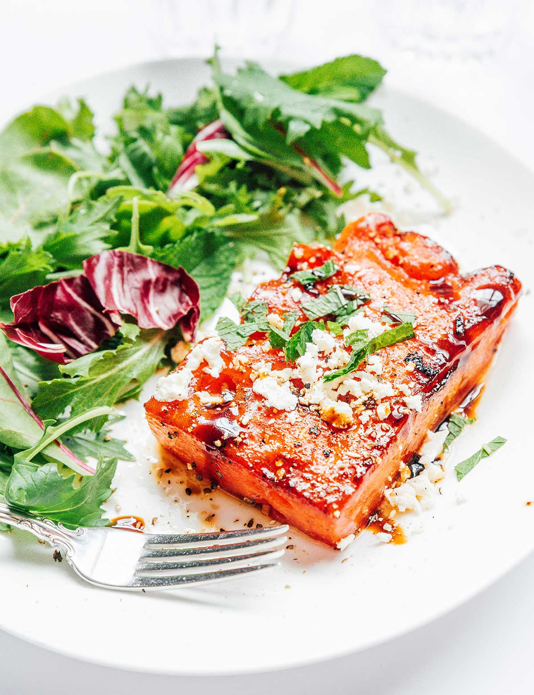

Watermelon steak
Home

Description
Pan-seared watermelon steaks are the ultimate summer BBQ dish! This recipe transforms
juicy watermelon slices into shockingly chewy and savory vegetarian steaks. With
ridiculously easy steps, they're guaranteed to steal the show at any gathering.
Ingredients
- 1/2 large seedless watermelon
- 2 Tbsp olive oil
- 1/2 tsp liquid smoke
- 2 cloves garlic
- 1/4 tsp each salt and pepper
- Garnish: balsamic reduction, crumbled feta cheese, chopped fresh mint
Steps
-
Cut the watermelon in half lengthwise. Place flat side down, and cut 1 ½ inch wide slices.
Cut the largest rectangle possible from each of these slices. You should be able to get about
6 steaks from ½ of a watermelon.
- Pat each of the steaks dry with paper towels. If you have time, place them in the refrigerator
uncovered for 1 to 2 hours to dry out excess moisture. Give them a final pat right before preparing.
-
Whisk together oil, liquid smoke, garlic, salt, and pepper. Liberally brush on both sides
of watermelon steaks.
-
Lightly grease a large saute pan over low/medium. Gently slide each steak in, cooking for about 5 minutes on
each side. Increase heat to medium-high and continue to cook each side for one minute until lightly browned.
- Serve warm, topped with balsamic reduction, feta, and mint.